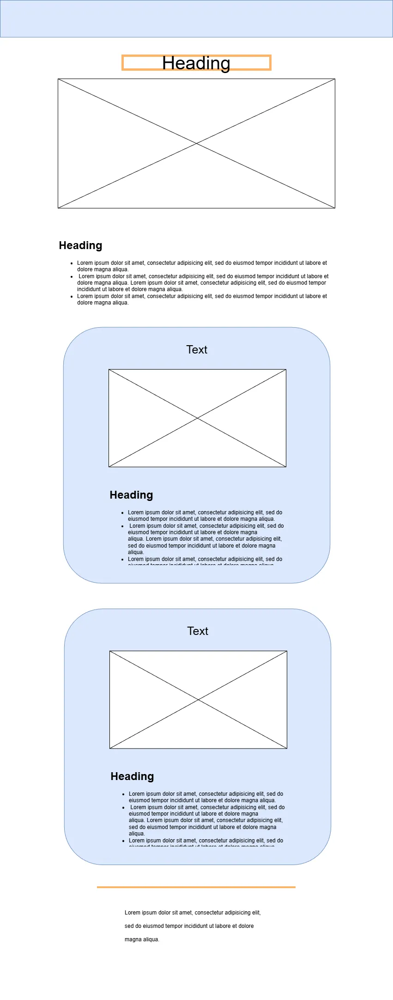
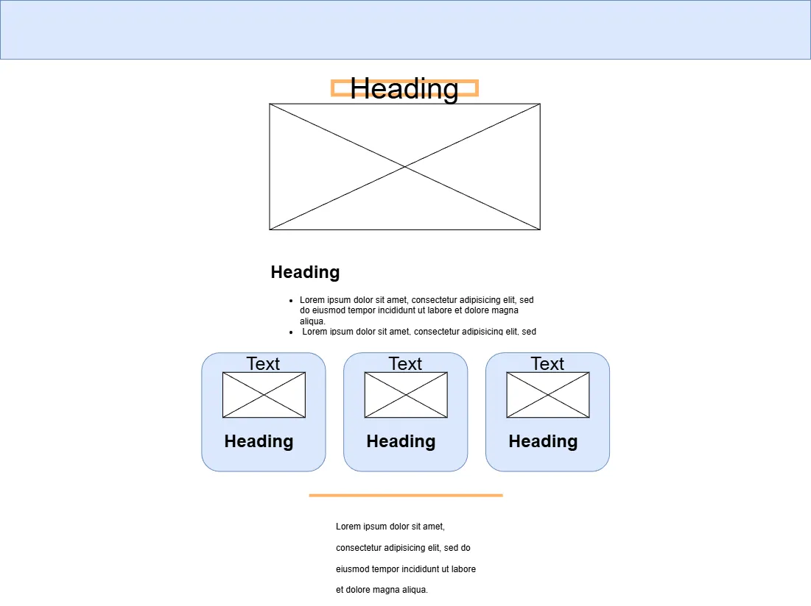

Site Name: Far, Far Away Galactic Vacations
I chose this site name because it calls back to the opening lines of Star Wars, which this site is inspired by.
Site Purpose
This site provides information about vacations across various planets to travelers interested in exploring the Star Wars galaxy.
Scenarios
- How is the weather this time of year on Hoth?
- What are some fun activities available on Tatooine?
- How do I book a vacation to Alderaan?
- What does my vacation package include?
Color Scheme
- Primary Color: #394a59
- Secondary Color: #dd4e1e
- Background Color: #fff
- Typeface Color: #222
Typography
- Goldman: Used for headings and titles
- Oxanium: Used for body text
Wireframes

